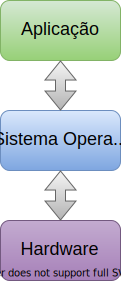
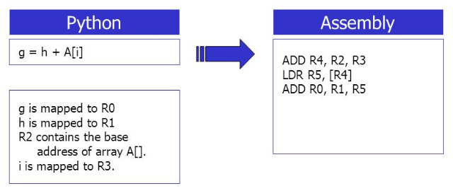
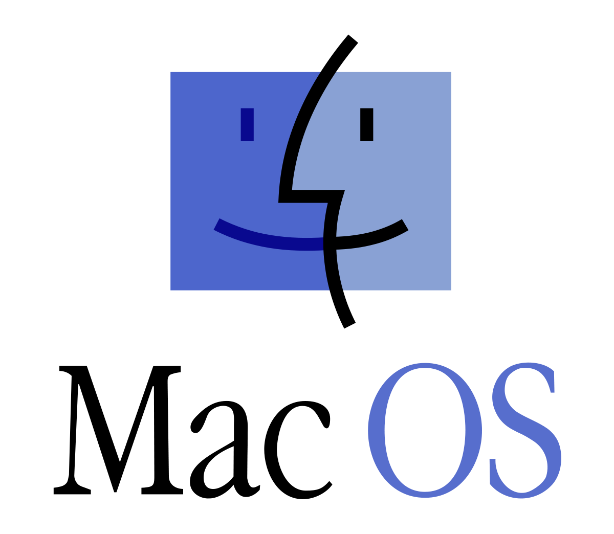
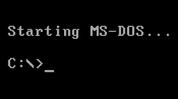
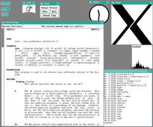
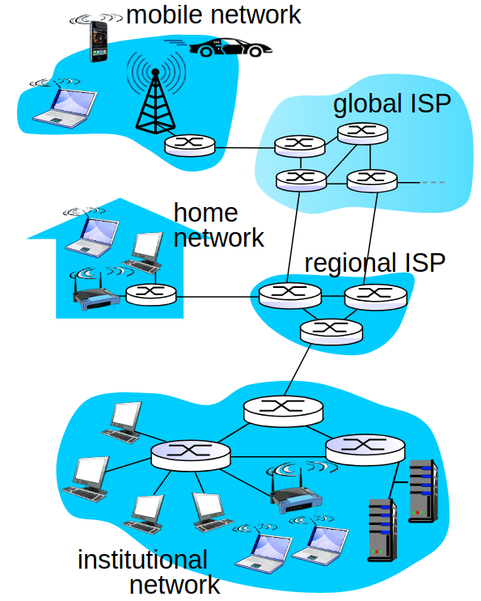
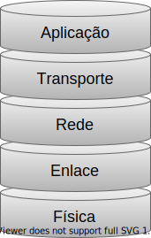
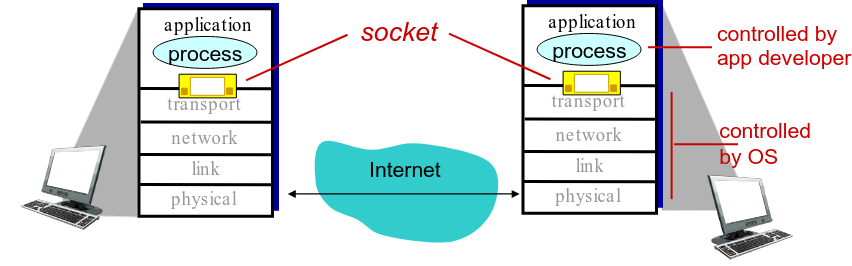
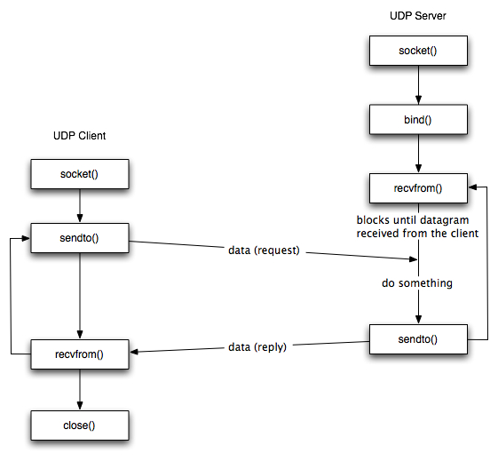

Universidade Atlântica
Introdução à Aplicações em Redes
Aula 10
Programação Avançada
Universidade Atlântica
Aula 10
Fernanda Passos
Programação Avançada

Programa
→






Uma definição de redes de computadores:
Conjunto de computadores independentes interconectados de modo que se comuniquem.


Fonte: http://www.content-animation.org.uk/teaching/tcp-ip.htm
Socket
Janela entre processo da aplicação e protocolo de transporte.

import socket
from socket import *
from socket import *
# Numero de porta na qual o servidor estara esperando conexoes.
serverPort = 12000
# Criar o socket. AF_INET e SOCK_DGRAM indicam UDP.
serverSocket = socket(AF_INET, SOCK_DGRAM)
# Associar o socket a porta escolhida. Primeiro argumento vazio indica
# que desejamos aceitar conexoes em qualquer interface de rede desse host
serverSocket.bind(('', serverPort))
print ('O servidor esta pronto para receber pacotes.')
# Continua...# Loop infinito: servidor eh capaz de tratar multiplas conexoes
while 1:
# Aguardar novo pacote
print ('Aguardando pacote...')
sentence, addr = serverSocket.recvfrom(1024)
print ('Nova pacote recebido!', addr)
# Processamento
capitalizedSentence = sentence.decode("ascii").upper()
# Envio. Repare que o endereco do destinatario eh necessario.
print ('Realizando envio...')
serverSocket.sendto(capitalizedSentence.encode("ascii"), addr)
# Fechamento
print ('Fechando socket...')
serverSocket.close()from socket import *
import os
serverName = 'localhost' # Ou '127.0.0.1'
serverPort = 12000
# Criacao do socket
clientSocket = socket(AF_INET, SOCK_DGRAM)
sentence = input('Input lowercase sentence:')
# Envio de bytes. Repare que o endereco do destinatario eh necessario
clientSocket.sendto(sentence.encode("ascii"), (serverName, serverPort))
# Recepcao
modifiedSentence, addr = clientSocket.recvfrom(1024)
print ('From Server:', addr, modifiedSentence.decode("ascii"))
# Fechamento
clientSocket.close()encodedecoderandint do módulo random para escolher entre as 3 possíveis respostas.